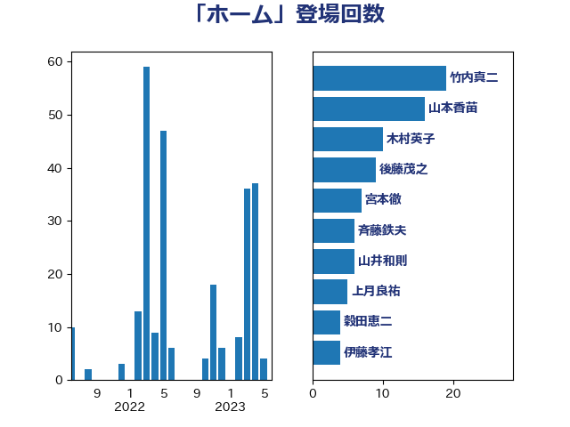

単語「ホーム」

| 竹内真二 | 公明党 | 19 回 |
| 山本香苗 | 公明党 | 16 回 |
| 木村英子 | れいわ新選組 | 10 回 |
| 後藤茂之 | 自由民主党 | 9 回 |
| 宮本徹 | 日本共産党 | 7 回 |
| 斉藤鉄夫 | 公明党 | 6 回 |
| 山井和則 | 立憲民主党 | 6 回 |
| 上月良祐 | 自由民主党 | 5 回 |
| 穀田恵二 | 日本共産党 | 4 回 |
| 伊藤孝江 | 公明党 | 4 回 |
| 井坂信彦 | 立憲民主党 | 4 回 |
| 鰐淵洋子 | 公明党 | 3 回 |
| 高橋光男 | 公明党 | 3 回 |
| 谷田川元 | 立憲民主党 | 3 回 |
| 矢倉克夫 | 公明党 | 3 回 |
| 田村智子 | 日本共産党 | 3 回 |
| 日下正喜 | 公明党 | 3 回 |
| 打越さく良 | 立憲民主党 | 3 回 |
| 加藤勝信 | 自由民主党 | 3 回 |
| 伊東信久 | 日本維新の会 | 3 回 |
| 上田清司 | 国民民主党 | 3 回 |
| 長友慎治 | 国民民主党 | 2 回 |
| 遠藤良太 | 日本維新の会 | 2 回 |
| 芳賀道也 | 国民民主党 | 2 回 |
| 篠原孝 | 立憲民主党 | 2 回 |
| 石井章 | 日本維新の会 | 2 回 |
| 田中昌史 | 自由民主党 | 2 回 |
| 田中健 | 国民民主党 | 2 回 |
| 津島淳 | 自由民主党 | 2 回 |
| 東徹 | 日本維新の会 | 2 回 |
| 杉本和巳 | 日本維新の会 | 2 回 |
| 斎藤アレックス | 国民民主党 | 2 回 |
| 川田龍平 | 立憲民主党 | 2 回 |
| 小野泰輔 | 日本維新の会 | 2 回 |
| 宮崎勝 | 公明党 | 2 回 |
| 倉林明子 | 日本共産党 | 2 回 |
| 仁木博文 | 無所属 | 2 回 |
| 井上信治 | 自由民主党 | 2 回 |
| 高階恵美子 | 自由民主党 | 1 回 |
| 高橋千鶴子 | 日本共産党 | 1 回 |
| 青木愛 | 立憲民主党 | 1 回 |
| 青山繁晴 | 自由民主党 | 1 回 |
| 野田聖子 | 自由民主党 | 1 回 |
| 里見隆治 | 公明党 | 1 回 |
| 赤羽一嘉 | 公明党 | 1 回 |
| 福島伸享 | 無所属 | 1 回 |
| 田村憲久 | 自由民主党 | 1 回 |
| 猪瀬直樹 | 日本維新の会 | 1 回 |
| 牧山ひろえ | 立憲民主党 | 1 回 |
| 浅尾慶一郎 | 自由民主党 | 1 回 |
| 櫻田義孝 | 自由民主党 | 1 回 |
| 森田俊和 | 立憲民主党 | 1 回 |
| 森屋隆 | 立憲民主党 | 1 回 |
| 平木大作 | 公明党 | 1 回 |
| 島村大 | 自由民主党 | 1 回 |
| 岸真紀子 | 立憲民主党 | 1 回 |
| 岩渕友 | 日本共産党 | 1 回 |
| 山田勝彦 | 立憲民主党 | 1 回 |
| 山下雄平 | 自由民主党 | 1 回 |
| 小泉進次郎 | 自由民主党 | 1 回 |
| 小山展弘 | 立憲民主党 | 1 回 |
| 小宮山泰子 | 立憲民主党 | 1 回 |
| 小倉將信 | 自由民主党 | 1 回 |
| 塩田博昭 | 公明党 | 1 回 |
| 吉田久美子 | 公明党 | 1 回 |
| 古屋範子 | 公明党 | 1 回 |
| 原口一博 | 立憲民主党 | 1 回 |
| 佐藤正久 | 自由民主党 | 1 回 |
| 井上哲士 | 日本共産党 | 1 回 |
| 五十嵐清 | 自由民主党 | 1 回 |
| 中野洋昌 | 公明党 | 1 回 |
| 中川宏昌 | 公明党 | 1 回 |